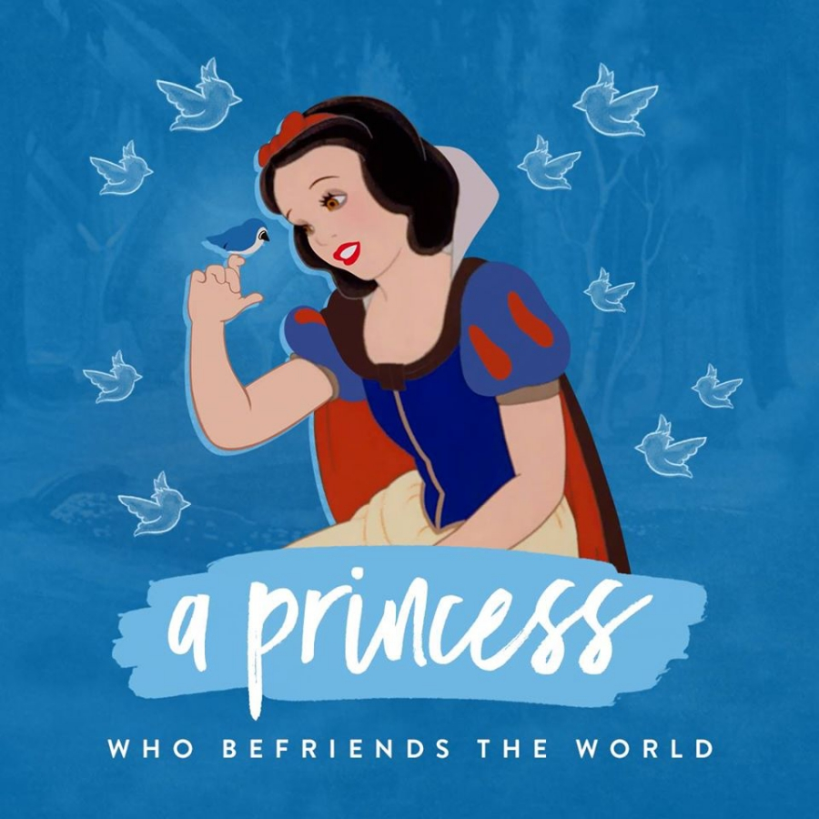
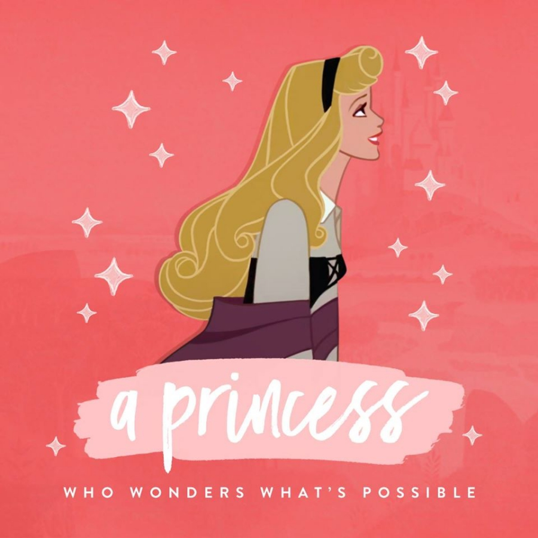
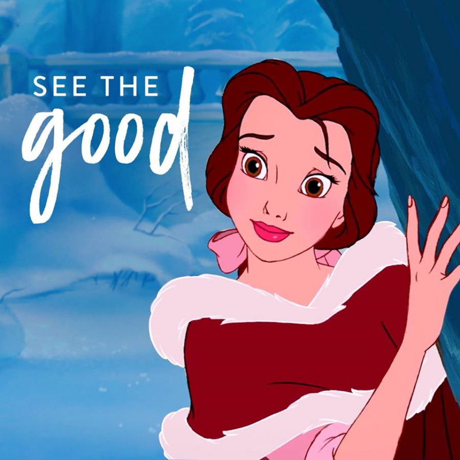

El origen de Cenicienta está un poco peleado, pues hay quienes dicen que es de Francia y otros que es de Alemania.
Existen varias versiones de esta historia, sin embargo las más populares son las del francés Charles Perrault y la de los hermanos Grimm, quienes son de Alemania.
La historia de Cenicienta de Charles Perrault se escribió en 1697 bajo el nombre de Cendrillon o La Petite Pantoufle de Verre.
El cuento de los hermanos Grimm fue publicado en 1812 y varía mucho de la versión francesa.
La película de Disney se apega más a la historia de Perrault; aunque hay que destacar que el castillo en el que se inspiró Disney para crear el de Cenicienta es el Neuschwanstein, que se encuentra en Alemania.
Blancanieves, Lohr am Main, Alemania
La película de Blancanieves está inspirada en un cuento de los Hermanos Grimm, quienes a su vez, se dice, se inspiraron en la historia de Maria Sophia von Erthal.

Maria Sophia von Erthal era hija del príncipe Philipp Christoph von Erthal, quienes vivían en el poblado de Lohr, junto al río Meno, en Alemania.
Actualmente se puede visitar el poblado de Lohr, también llamado Lohr am Main. Se encuentra a poco más de una hora, en automóvil, de Frankfurt.
En Lohr am Main pueden visitar el Museo del Spessart, el cual solía ser el castillo del príncipe Philipp Christoph von Erthal. En este sitio pueden ver al supuesto espejo mágico.
Aurora, Francia
La historia de Aurora, conocida como La Bella Durmiente, está inspirada en el cuento del escritor francés Charles Perrault, La Belle au Bois Dormant.

Se dice que el castillo de Aurora está en el Valle del Loira, en Francia, y se trata del Chateau D’Usse, un castillo construido entre los siglos XV y XVIII.
Otro dato curioso es que el castillo de Disneyland Paris está inspirado en La Bella Durmiente, de hecho en sus vitrales verán Bella, Francia fragmentos de la película.
Bella, Francia
La película de La Bella y la Bestia se desarrolla en un pueblo francés, y es uno de los filmes donde es más evidente la parte del mundo en donde se desarrolla, basta con poner atención en el diseño de las casas, los nombres de los personajes y sus canciones que tienen palabras en francés, como el tema “Belle”.

La historia de La Bella y la Bestia cuenta con varias versiones, entre las más famosas destacan la escrita por Gianfrancesco Straparola, en 1550; la de Gabrielle-Suzanne Barbot de Villeneuve, en 1740; y la de Jeanne-Marie Leprince de Beaumont, en 1756.
Se dice que el Castillo de Chambord, en el Valle de Loira, sirvió de inspiración para crear el castillo de la Bestia.
Rapunzel, Alemania
Rapunzel es la princesa del filme Enredados, el cual está inspirada en el cuento Rapunzel de los hermanos Grimm.
No existe un sitio en específico que reclame ser lugar de nacimiento de esta princesa, sin embargo, al ser un cuento de los hermanos Grimm, se le da su origen en Alemania.